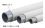

2022年
問題127 排水通気設備の機器と配管に関する次の記述のうち，最も不適当なものはどれか．
（1）雑排水ポンプは，厨房排水以外の雑排水を排除するのに用いる．
（2）排水用硬質塩化ビニルライニング鋼管は，その接続に可とう継手を用いる．
（3）防水床用の排水トラップには，水抜き孔が設置されている．
（4）排水用耐火二層管は，繊維モルタルによる外管と架橋ポリエチレン管による内管の組合せからなる．
（5）排水トラップが組み込まれていない阻集器には，その出口側に排水トラップを設ける．
2022年
問題127 正解（4） 頻出度AAA
排水用耐火二層管の内管は，硬質ポリ塩化ビニル管である（2022-127-1図，2022-127-1表参照）．
排水用耐火二層管は，建築基準法令や消防法で規定される防火区画を貫通する配管工法に使用することが認められている（別名トミジ管）．
2022-127-1図 排水用耐火二層管

出典 フネンアクロス株式会社
https://funen.co.jp/product_kudatsugite/ を基に作成．
2022-127-1表 主な排水用管材
| 管種・名称 | 用途 | 備考 |
| 排水用鋳鉄管 | 汚水，ちゅう房排水用 | 耐食性は大であるが，重い．メカニカル形と差し込み形がある． |
| 配管用炭素鋼管（水配管用亜鉛メッキ鋼管） | ちゅう房排水を除く雑排水管，通気管 | 黒管と白管のうち，排水用には白管を用いる．腐食しやすい． |
| 排水用硬質塩化ビニルライニング鋼管 | 汚水，雑排水用 | 鋳鉄管に比べ軽く取扱いが容易．ねじ切りはできない．排水鋼管用可とう継手（MD継手）と組合せて使用する． |
| 硬質ポリ塩化ビニル管（VP管，VU管） | 埋設管に広く使用される．一般にはVPを使用する． | 水圧試験圧力VP：2.5MPa，VU：1.5MPa． 伸縮による疲労割れが起こりやすい． |
| 排水用耐火二層管 | 排水，通気管用 | 外管：繊維モルタル管 内管：硬質ポリ塩化ビニル管 |
| 鉄筋コンクリート管 | 一般には下水道で使用される． | 敷地内では，外圧が大きい場合の埋設管として用いる． |
-(1) 排水用ポンプについては，2022-127-2表参照．
2022-127-2 排水用ポンプ
| 名称・種別 | 対象排水 | 最小口径 | 通過異物の大きさ | 備考 | |
| 汚水ポンプ | 浄化槽排水，湧水，雨水 | 40mm | 口径10％以下 | 原則として固形物を含まない排水． | |
| 雑排水ポンプ | 厨房以外の雑排水，雨水 | 50mm | 口径の30～40％以下 | 口径50mmで20mmの形異物が通過すること． | |
| 汚物ポンプ | ノンクロッグ型 | 汚水，厨房排水，産業排水 | 80mm | 口径の50～60％以下 | 口径80mmで53mmの木球が通過すること． |
| ボルテックス型 | 口径の100％ | ||||
-(3) 防水床用排水トラップの水抜き孔2022-127-2図参照．
2022-127-2図 防水床用排水トラップの水抜き孔
出典 第一機材株式会社
https://www.dkc.jp/q12-fd1-1606233.html
-(5) 阻集器の入口側にトラップを設けたら，直ぐ詰まってしまう．